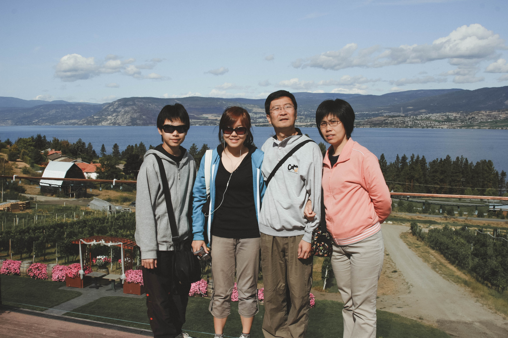
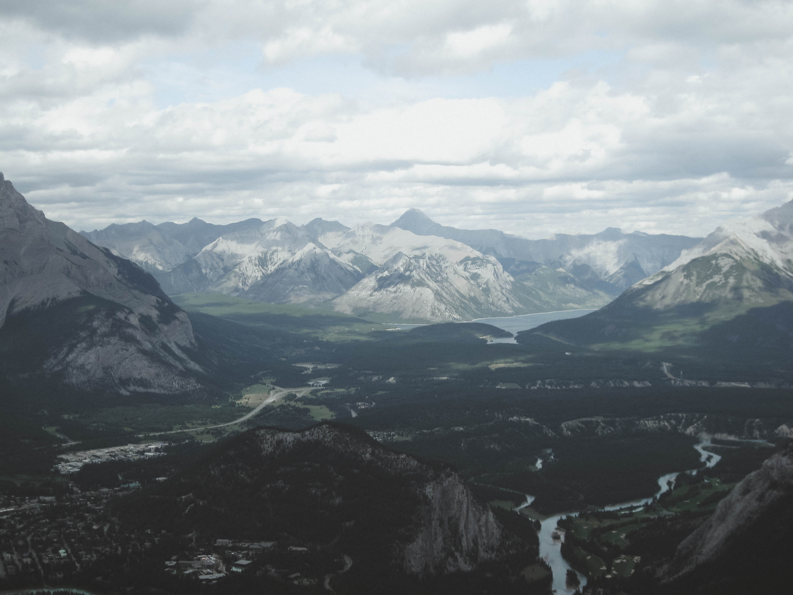

Karebear'sden

Canada's West Coast
Summer 2009
In the summer of 2009, I went to the west coast of Canada with my family and our family friends from Hong Kong. It was their first time in Canada and we decided to tour British Columbia and Alberta with them to show them the mounties of Canada.
I don’t remember the details of this trip, but I can clearly remember one thing: how in awe I was of the nature that is Canada. Growing up in Toronto, all I ever knew were flatlands and concrete jungles. I felt like I was in another world; one that made me feel small and insignificant in the grand scheme of things.
I hope to go back one day and spend more time in what I believe to be, the heart of Canada.

